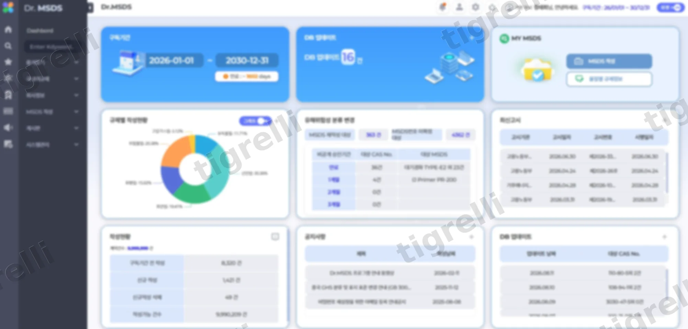
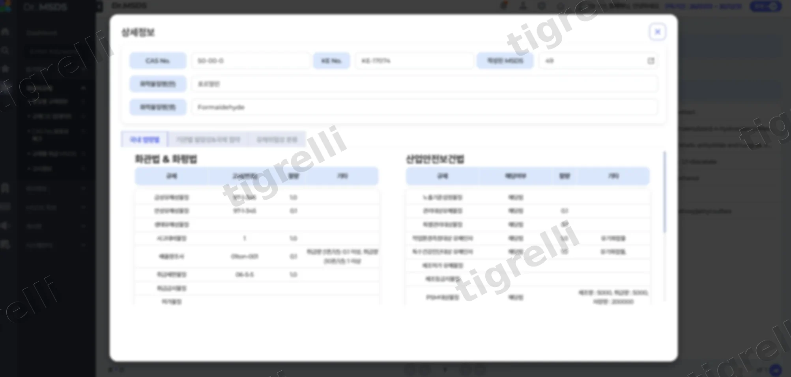
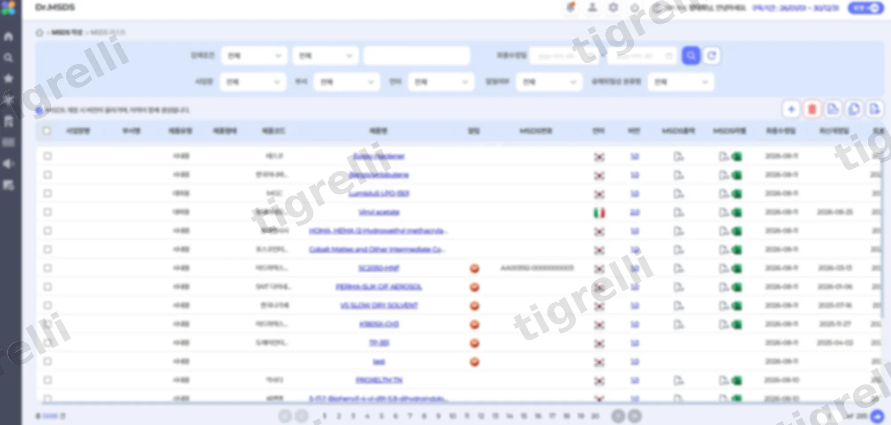
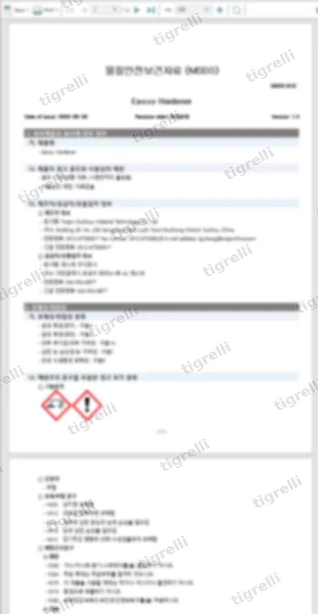

SaaS 운영·PO
MSDS 구독형 솔루션 운영·고도화
개요
Dr.MSDS는 켐토피아가 운영하는 MSDS(물질안전보건자료) 자동작성·관리 SaaS로, 약 22만 종의 화학물질 및 국가별 법령·언어 데이터베이스를 기반으로 5단계를 통해 16개 항목의 MSDS를 자동 생성합니다. 7개국 규제와 33개 언어를 지원해 수출용 MSDS 작성 부담을 줄이고, 국내 유일 MSDS 특허를 바탕으로 약 170여 개 기업이 15년 이상 사용해 온 검증된 솔루션입니다.
담당 업무
Dr.MSDS는 6년간 담당자로서 계속 맡아온 서비스였습니다. 짧은 프로젝트성 업무가 아니라 긴 시간 동안 같은 서비스를 운영하면서 구독 계약, 규제 데이터, 솔루션 패치, 고도화, 조직 운영 다섯 축으로 업무를 담당했습니다.
-
구독 고객사 계약관리
구독형 서비스의 특성상 고객사별 계약 갱신, 요금제, 이용 조건을 관리해야 했으며, 매년 갱신 시점마다 고객사의 요청 사항이 계약 조건에 부합하는지 검토하는 백엔드 시스템의 운영 및 관리까지 함께 담당했습니다.
-
규제 및 화학물질 데이터 관리
핵심 경쟁력인 규제 데이터의 정확성은 곧 서비스의 신뢰도로 직결되었습니다. 이에 규제 데이터를 등록·관리하는 시스템을 직접 개발하고 운영하며, 데이터베이스의 규모가 확대되는 과정에서도 항상 최신 상태의 데이터가 유지되도록 팀원들과 함께 체계적으로 관리해 왔습니다.
-
규제 부서와의 협업 패치
수시로 개정되는 규제 내용이 솔루션에 반영되지 않을 경우, 고객사가 잘못된 MSDS를 작성하게 되는 심각한 리스크가 있었습니다. 이를 방지하기 위해 규제 부서와 긴밀하게 협업하며 개정 사항을 상시 모니터링하고, 신속하게 패치를 적용하는 프로세스를 구축해 규제 변화에 가장 빠르고 정확하게 대응해 왔습니다.
-
QA 및 지속적인 솔루션 패치
고객사가 서비스를 이용하는 과정에서 겪는 오류와 불편 사항을 확인하고, 팀원들 함께 적합성 검토 후 솔루션을 패치하여 작은 기능들을 꾸준히 개선했습니다. 작은 단위의 패치들을 통해 서비스의 신뢰도와 만족도를 높일 수 있음을 배울 수 있었습니다.
-
사이트 고도화
사용자 UI/UX 개선부터 유독물질 알림 프로세스 및 레포팅 툴 도입까지, 규제 대응력 강화와 문서 생산성 향상, 사용자 경험 개선을 목표로 솔루션 전체 고도화를 총괄했습니다.
-
팀 운영 및 리딩
6년 동안 PO로 재직하며 개발자, 컨설턴트와 때로는 한 팀으로, 때로는 유기적인 협력 관계를 유지하며 업무를 수행했습니다. 개발자들과는 패치 및 고도화 일정을 조율하고, 컨설턴트들과는 규제 및 데이터의 정확성을 검토하며 운영과 고도화 전반을 이끌었습니다. 서로 다른 분야의 동료들과 효율적으로 협업할 수 있는 구조를 만들고, 이를 통해 서비스를 장기간 안정적으로 운영한 것이 가장 큰 성과였습니다.
스크린샷



